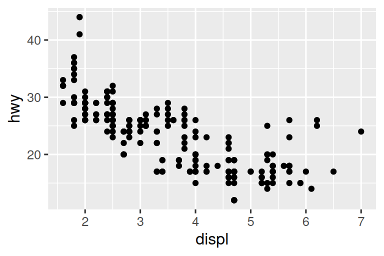

---
title: "Diamond sizes"
date: 2022-09-12
format: html
---
```{r}
#| label: setup
#| include: false
library(tidyverse)
smaller <- diamonds |>
filter(carat <= 2.5)
```
We have data about `r nrow(diamonds)` diamonds.
Only `r nrow(diamonds) - nrow(smaller)` are larger than 2.5 carats.
The distribution of the remainder is shown below:
```{r}
#| label: plot-smaller-diamonds
#| echo: false
smaller |>
ggplot(aes(x = carat)) +
geom_freqpoly(binwidth = 0.01)
```28 Quarto
28.1 Introducción
Quarto proporciona un marco de creación unificado para la ciencia de datos, combinando su código, sus resultados y su prosa. Los documentos Quarto son totalmente reproducibles y admiten docenas de formatos de salida, como PDF, archivos de Word, presentaciones y más.
Los archivos Quarto están diseñados para usarse de tres maneras:
Para comunicarse con los tomadores de decisiones, que quieren centrarse en las conclusiones, no en el código detrás del análisis.
Para colaborar con otros científicos de datos (¡incluido el futuro usted!), que están interesados tanto en sus conclusiones como en cómo las alcanzó (es decir, el código).
Como un entorno en el que hacer ciencia de datos, como un cuaderno de laboratorio moderno donde puede capturar no solo lo que hizo, sino también lo que estaba pensando.
Quarto es una herramienta de interfaz de línea de comandos, no un paquete R. Esto significa que la ayuda, en general, no está disponible a través de ?. En cambio, mientras trabaja en este capítulo y usa Quarto en el futuro, debe consultar la documentación de Quarto.
Si es un usuario de R Markdown, podría estar pensando “Quarto se parece mucho a R Markdown”. ¡Tu no estas equivocado! Quarto unifica la funcionalidad de muchos paquetes del ecosistema R Markdown (rmarkdown, bookdown, destilar, xaringan, etc.) en un solo sistema consistente y lo amplía con soporte nativo para múltiples lenguajes de programación como Python y Julia además de R. En cierto modo, Quarto refleja todo lo que se aprendió al expandir y respaldar el ecosistema R Markdown durante una década.
28.1.1 Requisitos previos
Necesita la interfaz de línea de comandos de Quarto (Quarto CLI), pero no necesita instalarla o cargarla explícitamente, ya que RStudio hace ambas cosas automáticamente cuando es necesario.
28.2 Quarto basics
Este es un archivo Quarto, un archivo de texto sin formato que tiene la extensión .qmd:
Contiene tres tipos importantes de contenido:
- Un encabezado YAML (opcional) rodeado de
---s. -
Porciones de código R rodeadas por
```. - Texto mezclado con formato de texto simple como
#títuloy_cursiva_.
Figura 28.1 muestra un documento .qmd en RStudio con interfaz de notebook donde el código y la salida están intercalados. Puede ejecutar cada fragmento de código haciendo clic en el ícono Ejecutar (parece un botón de reproducción en la parte superior del fragmento), o presionando Cmd/Ctrl + Shift + Enter. RStudio ejecuta el código y muestra los resultados en línea con el código.

Si no le gusta ver sus gráficos y resultados en su documento y prefiere utilizar la consola y los paneles de gráficos de RStudio, puede hacer clic en el icono de engranaje junto a “Render” y cambiar a “Chunk Output in Console”, como se muestra en Figura 28.2.

Para generar un informe completo que contenga todo el texto, el código y los resultados, haga clic en “Render” o presione Cmd/Ctrl + Shift + K. También puede hacer esto mediante programación con quarto::quarto_render("diamond-sizes.qmd"). Esto mostrará el informe en el panel del visor como se muestra en Figura 28.3 y creará un archivo HTML.

Cuando renderiza el documento, Quarto envía el archivo .qmd a knitr, https://yihui.org/knitr/, que ejecuta todos los fragmentos de código y crea un nuevo documento de markdown (.md) que incluye el código y su salida. El archivo markdown generado por knitr luego es procesado por pandoc, https://pandoc.org, que es responsable de crear el archivo terminado. Este proceso se muestra en Figura 28.4. La ventaja de este flujo de trabajo de dos pasos es que puede crear una amplia gama de formatos de salida, como aprenderá en Capítulo 29.

Para comenzar con su propio archivo .qmd, seleccione File > New File > Quarto Document… en la barra de menú. RStudio lanzará un asistente que puede usar para completar previamente su archivo con contenido útil que le recuerda cómo funcionan las funciones clave de Quarto
Las siguientes secciones se sumergen en los tres componentes de un documento Quarto con más detalles: el texto markdown, los fragmentos de código y el encabezado YAML.
28.2.1 Ejercicios
Crear un nuevo documento Quarto usando File > New File > Quarto Document. Lee las instrucciones. Practique ejecutar los fragmentos individualmente. Luego renderice el documento haciendo clic en el botón apropiado y luego usando el atajo de teclado apropiado. Verifique que puede modificar el código, volver a ejecutarlo y ver el resultado modificado.
Cree un nuevo documento Quarto para cada uno de los tres formatos integrados: HTML, PDF y Word. Renderice cada uno de los tres documentos. ¿Cómo difieren las salidas? ¿Cómo difieren las entradas? (Es posible que deba instalar LaTeX para generar la salida en PDF; RStudio le indicará si es necesario).
28.3 Editor Visual
El editor visual de RStudio proporciona una interfaz WYSIWYM para crear documentos Quarto. En el fondo, la prosa de los documentos Quarto (archivos .qmd) está escrita en Markdown, un conjunto ligero de convenciones para formatear archivos de texto sin formato. De hecho, Quarto usa Pandoc Markdown (una versión ligeramente extendida de Markdown que Quarto entiende), que incluye tablas, citas, referencias cruzadas, notas al pie, divs/spans, listas de definiciones, atributos, HTML/TeX sin formato y más, así como soporte para ejecutar celdas de código y ver su salida en línea. Si bien Markdown está diseñado para que sea fácil de leer y escribir, como verá en Sección 28.4, aún requiere aprender una nueva sintaxis. Por lo tanto, si es nuevo en documentos computacionales como archivos .qmd pero tiene experiencia en el uso de herramientas como Google Docs o MS Word, la forma más fácil de comenzar con Quarto en RStudio es el editor visual.
En el editor visual, puede usar los botones en la barra de menú para insertar imágenes, tablas, referencias cruzadas, etc. o puede usar el atajo general ⌘ + / or Ctrl + / para insertar casi cualquier cosa. Si está al comienzo de una línea (como se muestra en Figura 28.5), también puede ingresar solo / para invocar el atajo.
![Un documento Quarto que muestra varias funciones del editor visual, como formato de texto (cursiva, negrita, subrayado, versalitas, código, superíndice y subíndice), encabezados de primer a tercer nivel, listas numeradas y con viñetas, enlaces, frases vinculadas e imágenes (junto con una ventana emergente para personalizar el tamaño de la imagen, agregar un título y texto alternativo, etc.), tablas con una fila de encabezado y la herramienta Insertar cualquier cosa con opciones para insertar un fragmento de código R, un fragmento de código Python, un div, una lista con viñetas, una lista numerada o un encabezado de primer nivel (las primeras opciones de la herramienta).](quarto/quarto-visual-editor.png)
La inserción de imágenes y la personalización de cómo se muestran también se facilitan con el editor visual. Puede pegar una imagen de su portapapeles directamente en el editor visual (y RStudio colocará una copia de esa imagen en el directorio del proyecto y la vinculará) o puede usar el editor visual Insert > Figure / Image menu para buscar la imagen que desea insertar o pegar su URL. Además, utilizando el mismo menú, puede cambiar el tamaño de la imagen y agregar un título, texto alternativo y un enlace.
El editor visual tiene muchas más funciones que no hemos enumerado aquí y que pueden resultarle útiles a medida que adquiera experiencia creando con él.
Lo que es más importante, mientras que el editor visual muestra su contenido con formato, debajo del capó, guarda su contenido en Markdown simple y puede alternar entre los editores visual y fuente para ver y editar su contenido usando cualquiera de las herramientas.
28.3.1 Ejercicios
- Vuelva a crear el documento en Figura 28.5 usando el editor visual.
- Usando el editor visual, inserte un fragmento de código usando el menú Insertar y luego la herramienta Insertar cualquier cosa.
- Usando el editor visual, descubra cómo:
- Añadir una nota al pie.
- Agregue una regla horizontal.
- Agregue una cita en bloque.
- En el editor visual, vaya a Insert > Citation e inserte una cita al artículo titulado Bienvenido a Tidyverse usando su DOI (objeto digital identificador), que es 10.21105/joss.01686. Renderice el documento y observe cómo aparece la referencia en el documento. ¿Qué cambio observa en el YAML de su documento?
28.4 Editor Source
También puede editar documentos Quarto usando el editor de origen en RStudio, sin la ayuda del editor visual. Mientras que el editor visual les resultará familiar a quienes tengan experiencia escribiendo en herramientas como Google docs, el editor de código fuente les resultará familiar a quienes tengan experiencia escribiendo scripts R o documentos R Markdown. El editor de código fuente también puede ser útil para depurar cualquier error de sintaxis de Quarto, ya que a menudo es más fácil detectarlos en texto sin formato.
La siguiente guía muestra cómo usar Markdown de Pandoc para crear documentos Quarto en el editor de código fuente.
## Text formatting
*italic* **bold** ~~strikeout~~ `code`
superscript^2^ subscript~2~
[underline]{.underline} [small caps]{.smallcaps}
## Headings
# 1st Level Header
## 2nd Level Header
### 3rd Level Header
## Lists
- Bulleted list item 1
- Item 2
- Item 2a
- Item 2b
1. Numbered list item 1
2. Item 2.
The numbers are incremented automatically in the output.
## Links and images
<http://example.com>
[linked phrase](http://example.com)
{fig-alt="Quarto logo and the word quarto spelled in small case letters"}
## Tables
| First Header | Second Header |
|--------------|---------------|
| Content Cell | Content Cell |
| Content Cell | Content Cell |La mejor manera de aprender estos es simplemente probarlos. Tomará algunos días, pero pronto se convertirán en una segunda naturaleza y no necesitará pensar en ellos. Si lo olvida, puede acceder a una práctica hoja de referencia con Help > Markdown Quick Reference.
28.4.1 Ejercicios
Practica lo que has aprendido creando un breve CV. El título debe ser su nombre y debe incluir encabezados para (al menos) educación o empleo. Cada una de las secciones debe incluir una lista con viñetas de trabajos/títulos. Resalta el año en negrita.
-
Con el editor de código fuente y la referencia rápida de Markdown, descubra cómo:
- Añadir una nota al pie.
- Agregue una regla horizontal.
- Agregue una cita en bloque.
Copie y pegue el contenido de
diamond-sizes.qmdde https://github.com/hadley/r4ds/tree/main/quarto en un documento R Quarto local. Comprueba que puedes ejecutarlo, luego agrega texto después del polígono de frecuencia que describe sus características más llamativas.Cree un documento en un documento de Google o MS Word (o busque un documento que haya creado anteriormente) con algún contenido, como encabezados, hipervínculos, texto formateado, etc. Copie el contenido de este documento y péguelo en un documento Quarto en el editor visual. Luego, cambie al editor de código fuente e inspeccione el código fuente.
28.5 Fragmentos de código
Para ejecutar código dentro de un documento Quarto, debe insertar un fragmento. Hay tres formas de hacerlo:
El método abreviado de teclado Cmd + Opción + I / Ctrl + Alt + I.
El icono del botón “Insert” en la barra de herramientas del editor.
Al escribir manualmente los delimitadores de fragmentos
```{r}y```.
Le recomendamos que aprenda el atajo de teclado. ¡Te ahorrará mucho tiempo a largo plazo!
Puede continuar ejecutando el código usando el atajo de teclado que ahora (¡esperamos!) conoce y ama: Cmd/Ctrl + Enter. Sin embargo, los fragmentos obtienen un nuevo atajo de teclado: Cmd/Ctrl + Shift + Enter, que ejecuta todo el código en el fragmento. Piensa en un trozo como una función. Un fragmento debe ser relativamente independiente y centrarse en una sola tarea.
Las siguientes secciones describen el encabezado del fragmento que consta de ```{r}, seguido de una etiqueta de fragmento opcional y varias otras opciones de fragmento, cada una en su propia línea, marcada por #|.
28.5.1 Etiqueta de fragmento de código
A los fragmento de código se les puede dar una etiqueta opcional, p.ej.
```{r}
#| label: simple-addition
1 + 1
```#> [1] 2Esto tiene tres ventajas:
-
Puede navegar más fácilmente a fragmentos específicos utilizando el navegador de código desplegable en la parte inferior izquierda del editor de secuencias de comandos:

Los gráficos producidos por los fragmentos tendrán nombres útiles que los harán más fáciles de usar en otros lugares. Más sobre eso en Sección 28.6.
Puede configurar redes de fragmentos almacenados en caché para evitar volver a realizar cálculos costosos en cada ejecución. Más sobre eso en Sección 28.8.
Las etiquetas de fragmentos deben ser cortas pero sugerentes y no deben contener espacios. Recomendamos usar guiones (-) para separar palabras (en lugar de guiones bajos, _) y evitar otros caracteres especiales en las etiquetas de fragmentos.
Por lo general, eres libre de etiquetar tu fragmento como quieras, pero hay un nombre de fragmento que imbuye un comportamiento especial: setup. Cuando esté en modo notebook, el fragmento denominado setup se ejecutará automáticamente una vez, antes de que se ejecute cualquier otro código.
Además, las etiquetas de fragmentos no se pueden duplicar. Cada etiqueta de fragmento debe ser única.
28.5.2 Opciones de fragmentos de código
La salida del fragmento se puede personalizar con opciones, campos proporcionados al encabezado del fragmento. Knitr proporciona casi 60 opciones que puede usar para personalizar sus fragmentos de código. Aquí cubriremos las opciones de fragmentos más importantes que usará con frecuencia. Puedes ver la lista completa en https://yihui.org/knitr/options.
El conjunto de opciones más importante controla si su bloque de código se ejecuta y qué resultados se insertan en el informe terminado:
eval: falseimpide que se evalúe el código. (Y obviamente si no se ejecuta el código, no se generarán resultados). Esto es útil para mostrar código de ejemplo o para deshabilitar un gran bloque de código sin comentar cada línea.include: falseejecuta el código, pero no muestra el código ni da como resultado el documento final. Úselo para el código de configuración que no desea que abarrote su informe.echo: falseevita que el código, pero no los resultados, aparezca en el archivo terminado. Use esto cuando escriba informes dirigidos a personas que no quieren ver el código R subyacente.message: falseowarning: falseevita que aparezcan mensajes o advertencias en el archivo terminado.results: hideoculta la salida impresa;fig-show: hideoculta gráficas.error: truehace que el procesamiento continúe incluso si el código devuelve un error. Esto rara vez es algo que desee incluir en la versión final de su informe, pero puede ser muy útil si necesita depurar exactamente lo que está sucediendo dentro de su.qmd. También es útil si está enseñando R y quiere incluir deliberadamente un error. El valor predeterminadoerror: falsehace que la representación falle si hay un solo error en el documento.
Cada una de estas opciones de fragmento se agrega al encabezado del fragmento, después de #|, por ejemplo, en el siguiente fragmento, el resultado no se imprime ya que eval se establece en falso.
```{r}
#| label: simple-multiplication
#| eval: false
2 * 2
```La siguiente tabla resume qué tipos de salida suprime cada opción:
| Opción | Ejecutar código | Mostrar código | Salida | Gráficas | Mensages | Advertencias |
|---|---|---|---|---|---|---|
eval: false |
X | X | X | X | X | |
include: false |
X | X | X | X | X | |
echo: false |
X | |||||
results: hide |
X | |||||
fig-show: hide |
X | |||||
message: false |
X | |||||
warning: false |
X |
28.5.3 Opciones globales
A medida que trabaje más con knitr, descubrirá que algunas de las opciones de fragmentos predeterminadas no se ajustan a sus necesidades y querrá cambiarlas.
Puede hacerlo agregando las opciones preferidas en el documento YAML, en execute. Por ejemplo, si está preparando un informe para una audiencia que no necesita ver su código sino solo sus resultados y narración, puede establecer echo: false en el nivel del documento. Eso ocultará el código de forma predeterminada, por lo que solo mostrará los fragmentos que elija mostrar deliberadamente (con echo: true). Podría considerar configurar message: false y warning: false, pero eso dificultaría la depuración de problemas porque no vería ningún mensaje en el documento final.
title: "My report"
execute:
echo: falseDado que Quarto está diseñado para ser multilingüe (funciona con R y otros lenguajes como Python, Julia, etc.), todas las opciones de knitr no están disponibles en el nivel de ejecución del documento, ya que algunas de ellas solo funcionan con knitr y no otros motores que usa Quarto para ejecutar código en otros lenguajes (por ejemplo, Jupyter). Sin embargo, aún puede configurarlas como opciones globales para su documento en el campo knitr, en opts_chunk. Por ejemplo, al escribir libros y tutoriales establecemos:
title: "Tutorial"
knitr:
opts_chunk:
comment: "#>"
collapse: trueEsto utiliza nuestro formato de comentario preferido y garantiza que el código y la salida se mantengan estrechamente entrelazados.
28.5.4 código en línea
Hay otra forma de incrustar código R en un documento de Quarto: directamente en el texto, con: `r `. Esto puede ser muy útil si menciona propiedades de sus datos en el texto. Por ejemplo, el documento de ejemplo utilizado al comienzo del capítulo tenía:
We have data about
`r nrow(diamonds)`diamonds. Only`r nrow(diamonds) - nrow(smaller)`are larger than 2.5 carats. The distribution of the remainder is shown below:
Cuando se presenta el informe, los resultados de estos cálculos se insertan en el texto:
We have data about 53940 diamonds. Only 126 are larger than 2.5 carats. The distribution of the remainder is shown below:
Al insertar números en el texto, format() es tu amigo. Le permite configurar el número de digits para que no imprima con un grado ridículo de precisión, y una big.mark para que los números sean más fáciles de leer. Puede combinarlos en una función de ayuda:
comma <- function(x) format(x, digits = 2, big.mark = ",")
comma(3452345)
#> [1] "3,452,345"
comma(.12358124331)
#> [1] "0.12"28.5.5 Ejercicios
Agregue una sección que explore cómo los tamaños de los diamantes varían según el corte, el color y la claridad. Suponga que está escribiendo un informe para alguien que no conoce R y, en lugar de establecer
echo: falseen cada fragmento, establezca una opción global.Descargue
diamond-sizes.qmddesde https://github.com/hadley/r4ds/tree/main/quarto. Agregue una sección que describa los 20 diamantes más grandes, incluida una tabla que muestre sus atributos más importantes.Modifique
diamonds-sizes.qmdpara usarlabel_comma()para producir una salida bien formateada. Incluya también el porcentaje de diamantes de más de 2,5 quilates.
28.6 Figuras
Las figuras en un documento Quarto se pueden incrustar (por ejemplo, un archivo PNG o JPEG) o generarse como resultado de un fragmento de código.
Para incrustar una imagen de un archivo externo, puede usar el menú Insertar en el Editor visual en RStudio y seleccionar Figura/Imagen. Esto abrirá un menú emergente donde puede buscar la imagen que desea insertar, así como agregarle un texto alternativo o un título y ajustar su tamaño. En el editor visual también puede simplemente pegar una imagen de su portapapeles en su documento y RStudio colocará una copia de esa imagen en su carpeta de proyecto.
Si incluye un fragmento de código que genera una figura (por ejemplo, incluye una llamada ggplot()), la figura resultante se incluirá automáticamente en su documento Quarto.
28.6.1 Tamaño de la figura
El mayor desafío de los gráficos Quarto es conseguir que las figuras tengan el tamaño y la forma adecuados. Hay cinco opciones principales que controlan el tamaño de la figura: fig-width, fig-height, fig-asp, out-width y out-height. El tamaño de la imagen es un desafío porque hay dos tamaños (el tamaño de la figura creada por R y el tamaño en el que se inserta en el documento de salida) y varias formas de especificar el tamaño (es decir, alto, ancho y relación de aspecto: seleccione dos de tres).
Recomendamos tres de las cinco opciones:
Las gráficas tienden a ser más agradables estéticamente si tienen un ancho uniforme. Para hacer cumplir esto, configure
fig-width: 6(6”) yfig-asp: 0.618(la proporción áurea) en los valores predeterminados. Luego, en los fragmentos individuales, solo ajustefig-asp.-
Controle el tamaño de salida con
out-widthy configúrelo en un porcentaje del ancho del cuerpo del documento de salida. Sugerimosout-width: "70%"yfig-align: center.Eso le da a las gráficas espacio para respirar, sin ocupar demasiado espacio.
Para colocar varias gráficas en una sola fila, establezca
layout-ncolen 2 para dos gráficas, 3 para tres gráficas, etc. Esto establece efectivamenteout-widthen “50%” para cada una de sus parcelas silayout-ncoles 2, “33%” silayout-ncoles 3, etc. Dependiendo de lo que esté tratando de ilustrar (por ejemplo, mostrar datos o mostrar variaciones de gráficos), también puede modificarfig-width, como se explica a continuación.
Si encuentra que tiene que entrecerrar los ojos para leer el texto en su gráfica, necesita modificar fig-width. Si fig-width es más grande que el tamaño de la figura en el documento final, el texto será demasiado pequeño; si fig-width es más pequeño, el texto será demasiado grande. A menudo necesitarás hacer un poco de experimentación para encontrar la proporción correcta entre el fig-width y el ancho final en tu documento. Para ilustrar el principio, las siguientes tres gráficas tienen un ancho de figura de 4, 6 y 8 respectivamente:


Si desea asegurarse de que el tamaño de la fuente sea consistente en todas sus figuras, cada vez que configure out-width, también deberá ajustar fig-width para mantener la misma proporción con su out-width predeterminado. Por ejemplo, si su fig-width predeterminado es 6 y out-width es “70%”, cuando establezca out-width: "50%", deberá establecer fig-width en 4.3 (6 * 0.5 / 0.7).
El dimensionamiento y escalado de figuras es un arte y una ciencia, y hacer las cosas bien puede requerir un enfoque iterativo de prueba y error. Puede obtener más información sobre el tamaño de la figura en la publicación del blog sobre cómo tomar el control de la escala de la gráfica.
28.6.2 Otras opciones importantes
Al mezclar código y texto, como en este libro, puede configurar fig-show: hold para que los gráficos se muestren después del código. Esto tiene el agradable efecto secundario de obligarte a dividir grandes bloques de código con sus explicaciones.
Para agregar un título a la gráfica, use fig-cap. En Quarto, esto cambiará la figura de en línea a “floating”.
Si está produciendo una salida en PDF, el tipo de gráfico predeterminado es PDF. Este es un buen valor predeterminado porque los archivos PDF son gráficos vectoriales de alta calidad. Sin embargo, pueden producir gráficos muy grandes y lentos si muestra miles de puntos. En ese caso, configure fig-format: "png" para forzar el uso de PNG. Son de calidad ligeramente inferior, pero serán mucho más compactos.
Es una buena idea nombrar fragmentos de código que produzcan figuras, incluso si no etiqueta otros fragmentos de forma rutinaria. La etiqueta de fragmento se usa para generar el nombre de archivo del gráfico en el disco, por lo que nombrar sus fragmentos hace que sea mucho más fácil seleccionar gráficos y reutilizarlos en otras circunstancias (es decir, si desea colocar rápidamente un solo gráfico en un correo electrónico).
28.6.3 Ejercicios
Abra
diamond-sizes.qmden el editor visual, busque una imagen de un diamante, cópiela y péguela en el documento. Haga doble clic en la imagen y agregue un título. Cambie el tamaño de la imagen y renderice su documento. Observe cómo se guarda la imagen en su directorio de trabajo actual.Edite la etiqueta del fragmento de código en
diamond-sizes.qmdque genera un gráfico que comience con el sufijofig-y agregue un título a la figura con la opción de fragmentofig-cap. Luego, edite el texto sobre el fragmento de código para agregar una referencia cruzada a la figura con Insert > Cross Reference.-
Cambie el tamaño de la figura con las siguientes opciones de fragmento, una a la vez, renderice su documento y describa cómo cambia la figura.
fig-width: 10fig-height: 3out-width: "100%"out-width: "20%"
28.7 Tablas
Al igual que las figuras, puede incluir dos tipos de tablas en un documento Quarto. Pueden ser tablas de markdown que crea directamente en su documento Quarto (usando el menú Insert table) o pueden ser tablas generadas como resultado de un fragmento de código. En esta sección nos centraremos en las últimas, tablas generadas mediante computación.
De forma predeterminada, Quarto imprime data frames y matrices como los vería en la consola:
mtcars[1:5, ]
#> mpg cyl disp hp drat wt qsec vs am gear carb
#> Mazda RX4 21.0 6 160 110 3.90 2.620 16.46 0 1 4 4
#> Mazda RX4 Wag 21.0 6 160 110 3.90 2.875 17.02 0 1 4 4
#> Datsun 710 22.8 4 108 93 3.85 2.320 18.61 1 1 4 1
#> Hornet 4 Drive 21.4 6 258 110 3.08 3.215 19.44 1 0 3 1
#> Hornet Sportabout 18.7 8 360 175 3.15 3.440 17.02 0 0 3 2Si prefiere que los datos se muestren con un formato adicional, puede usar la función knitr::kable(). El siguiente código genera Tabla 28.1.
knitr::kable(mtcars[1:5, ], )| mpg | cyl | disp | hp | drat | wt | qsec | vs | am | gear | carb | |
|---|---|---|---|---|---|---|---|---|---|---|---|
| Mazda RX4 | 21.0 | 6 | 160 | 110 | 3.90 | 2.620 | 16.46 | 0 | 1 | 4 | 4 |
| Mazda RX4 Wag | 21.0 | 6 | 160 | 110 | 3.90 | 2.875 | 17.02 | 0 | 1 | 4 | 4 |
| Datsun 710 | 22.8 | 4 | 108 | 93 | 3.85 | 2.320 | 18.61 | 1 | 1 | 4 | 1 |
| Hornet 4 Drive | 21.4 | 6 | 258 | 110 | 3.08 | 3.215 | 19.44 | 1 | 0 | 3 | 1 |
| Hornet Sportabout | 18.7 | 8 | 360 | 175 | 3.15 | 3.440 | 17.02 | 0 | 0 | 3 | 2 |
Lee la documentación de ?knitr::kable para ver otras formas en las que puedes personalizar la tabla. Para una personalización aún más profunda, considere gt, huxtable, reactable, kableExtra, xtable, stargazer, pander, * Paquetes *tables y ascii**. Cada uno proporciona un conjunto de herramientas para devolver tablas formateadas desde el código R.
28.7.1 Ejercicios
- Abra
diamond-sizes.qmden el editor visual, inserte un fragmento de código y agregue una tabla conknitr::kable()que muestre las primeras 5 filas del data framediamonds. - Muestre la misma tabla con
gt::gt()en su lugar. - Agregue una etiqueta de fragmento que comience con el sufijo
tbl-y agregue un título a la tabla con la opción de fragmentotbl-cap. Luego, edite el texto sobre el fragmento de código para agregar una referencia cruzada a la tabla con Insert > Cross Reference.
28.8 Almacenamiento en caché
Normalmente, cada renderizado de un documento comienza desde cero. Esto es excelente para la reproducibilidad, porque garantiza que haya capturado todos los cálculos importantes en el código. Sin embargo, puede ser doloroso si tiene algunos cálculos que toman mucho tiempo. La solucion es cache: true.
Puede habilitar el caché de Knitr a nivel de documento para almacenar en caché los resultados de todos los cálculos en un documento usando las opciones estándar de YAML:
---
title: "My Document"
execute:
cache: true
---También puede habilitar el almacenamiento en caché a nivel de fragmento para almacenar en caché los resultados del cálculo en un fragmento específico:
```{r}
#| cache: true
# código para cálculos largos...
```Cuando se establece, esto guardará la salida del fragmento en un archivo con un nombre especial en el disco. En ejecuciones posteriores, knitr verificará si el código ha cambiado y, si no es así, reutilizará los resultados almacenados en caché.
El sistema de almacenamiento en caché debe usarse con cuidado, ya que, de manera predeterminada, se basa solo en el código, no en sus dependencias. Por ejemplo, aquí el fragmento processed_data depende del fragmento raw-data:
```{r}
#| label: raw-data
#| cache: true
rawdata <- readr::read_csv("a_very_large_file.csv")
``````{r}
#| label: processed_data
#| cache: true
processed_data <- rawdata |>
filter(!is.na(import_var)) |>
mutate(new_variable = complicated_transformation(x, y, z))
```Almacenar en caché el fragmento processed_data significa que se volverá a ejecutar si se cambia la canalización de dplyr, pero no se volverá a ejecutar si cambia la llamada read_csv(). Puede evitar ese problema con la opción de fragmento dependson:
```{r}
#| label: processed-data
#| cache: true
#| dependson: "raw-data"
processed_data <- rawdata |>
filter(!is.na(import_var)) |>
mutate(new_variable = complicated_transformation(x, y, z))
```dependson debe contener un vector de caracteres de cada fragmento del que depende el fragmento almacenado en caché. Knitr actualizará los resultados del fragmento en caché cada vez que detecte que una de sus dependencias ha cambiado.
Tenga en cuenta que los fragmentos no se actualizarán si un_archivo_muy_grande.csv cambia, porque el almacenamiento en caché de knitr solo rastrea los cambios dentro del archivo .qmd. Si también desea realizar un seguimiento de los cambios en ese archivo, puede usar la opción cache.extra. Esta es una expresión R arbitraria que invalidará el caché cada vez que cambie. Una buena función para usar es file.mtime(): regresa cuando fue modificada por última vez. Entonces puedes escribir:
```{r}
#| label: raw-data
#| cache: true
#| cache.extra: !expr file.mtime("a_very_large_file.csv")
rawdata <- readr::read_csv("un_archivo_muy_grande.csv")
```Seguimos el consejo de David Robinson para nombrar estos fragmentos: cada fragmento lleva el nombre del objeto principal que crea. Esto facilita la comprensión de la especificación dependson.
A medida que sus estrategias de almacenamiento en caché se vuelven progresivamente más complicadas, es una buena idea borrar regularmente todos sus cachés con knitr::clean_cache().
28.8.1 Ejercicios
- Configure una red de fragmentos donde
ddependa decyb, y tantobcomocdependan dea. Haga que cada fragmento imprimalubridate::now(), configurecache: truey luego verifique su comprensión del almacenamiento en caché.
28.9 Solución de problemas
La solución de problemas de documentos Quarto puede ser un desafío porque ya no se encuentra en un entorno R interactivo y deberá aprender algunos trucos nuevos. Además, el error podría deberse a problemas con el propio documento Quarto o al código R en el documento Quarto.
Un error común en los documentos con fragmentos de código son las etiquetas de fragmentos duplicados, que son especialmente frecuentes si su flujo de trabajo implica copiar y pegar fragmentos de código. Para solucionar este problema, todo lo que necesita hacer es cambiar una de sus etiquetas duplicadas.
Si los errores se deben al código R del documento, lo primero que debes intentar siempre es recrear el problema en una sesión interactiva. Reinicie R, luego “Ejecute todos los fragmentos” ya sea desde el menú Código, en la región Ejecutar, o con el atajo de teclado Ctrl + Alt + R. Si tiene suerte, eso recreará el problema y podrá averiguar qué está pasando de forma interactiva.
Si eso no ayuda, debe haber algo diferente entre su entorno interactivo y el entorno de Quarto. Vas a necesitar explorar sistemáticamente las opciones. La diferencia más común es el directorio de trabajo: el directorio de trabajo de Quarto es el directorio en el que vive. Comprueba que el directorio de trabajo es lo que esperas al incluir getwd() en un fragmento.
A continuación, haga una lluvia de ideas sobre todas las cosas que podrían causar el error. Deberá verificar sistemáticamente que sean iguales en su sesión R y en su sesión Quarto. La forma más fácil de hacerlo es configurar error: true en el fragmento que causa el problema, luego usar print() y str() para verificar que la configuración sea la esperada.
28.10 Encabezado YAML
Puede controlar muchas otras configuraciones de “documento completo” ajustando los parámetros del encabezado YAML. Quizás se pregunte qué significa YAML: es “YAML Ain’t Markup Language”, que está diseñado para representar datos jerárquicos de una manera que sea fácil de leer y escribir para los humanos. Quarto lo usa para controlar muchos detalles de la salida. Aquí discutiremos tres: documentos independientes, parámetros de documentos y bibliografías.
28.10.1 Independientes
Los documentos HTML suelen tener una serie de dependencias externas (por ejemplo, imágenes, hojas de estilo CSS, JavaScript, etc.) y, de forma predeterminada, Quarto coloca estas dependencias en una carpeta _files en el mismo directorio que su archivo .qmd. Si publica el archivo HTML en una plataforma de alojamiento (p. ej., QuartoPub, https://quartopub.com/), las dependencias de este directorio se publican con su documento y, por lo tanto, están disponibles en el informe publicado. Sin embargo, si desea enviar el informe por correo electrónico a un colega, es posible que prefiera tener un documento HTML único e independiente que incorpore todas sus dependencias. Puedes hacer esto especificando la opción embed-resources:
format:
html:
embed-resources: trueEl archivo resultante será autónomo, por lo que no necesitará archivos externos ni acceso a Internet para que un navegador lo muestre correctamente.
28.10.2 Parámetros
Los documentos Quarto pueden incluir uno o más parámetros cuyos valores se pueden establecer al representar el informe. Los parámetros son útiles cuando desea volver a representar el mismo informe con valores distintos para varias entradas clave. Por ejemplo, podría generar informes de ventas por sucursal, resultados de exámenes por estudiante o resúmenes demográficos por país. Para declarar uno o más parámetros, utilice el campo params.
Este ejemplo usa un parámetro my_class para determinar qué clase de autos mostrar:
---
output: html
params:
my_class: "suv"
---
```{r}
#| label: setup
#| include: false
library(tidyverse)
class <- mpg |> filter(class == params$my_class)
```
# Fuel economy for `r params$my_class`s
```{r}
#| message: false
ggplot(class, aes(x = displ, y = hwy)) +
geom_point() +
geom_smooth(se = FALSE)
```Como puede ver, los parámetros están disponibles dentro de los fragmentos de código como una lista de solo lectura llamada params.
Puede escribir vectores atómicos directamente en el encabezado YAML. También puede ejecutar expresiones R arbitrarias anteponiendo el valor del parámetro con !expr. Esta es una buena forma de especificar parámetros de fecha/hora.
params:
start: !expr lubridate::ymd("2015-01-01")
snapshot: !expr lubridate::ymd_hms("2015-01-01 12:30:00")28.10.3 Bibliografías y citas
Quarto puede generar automáticamente citas y una bibliografía en varios estilos. La forma más sencilla de agregar citas y bibliografías a un documento Quarto es usar el editor visual en RStudio.
Para agregar una cita usando el editor visual, vaya a Insert > Citation. Citations se puede insertar desde una variedad de fuentes:
DOI (Identificador de objeto de documento) referencias.
Zotero bibliotecas personales o de grupo.
La bibliografía de su documento (un archivo
.biben el directorio de su documento)
Debajo del capó, el modo visual utiliza la representación de markdown estándar de Pandoc para las citas (por ejemplo, [@citation]).
Si agrega una cita utilizando uno de los primeros tres métodos, el editor visual creará automáticamente un archivo bibliography.bib y le agregará la referencia. También agregará un campo bibliography al documento YAML. A medida que agregue más referencias, este archivo se completará con sus citas. También puede editar directamente este archivo utilizando muchos formatos de bibliografía comunes, incluidos BibLaTeX, BibTeX, EndNote, Medline.
Para crear una cita dentro de su archivo .qmd en el editor de código fuente, use una clave compuesta por ‘@’ + el identificador de cita del archivo de bibliografía. Luego coloque la cita entre corchetes. Aquí hay unos ejemplos:
Separe las citas múltiples con un `;`: Bla bla [@smith04; @doe99].
Puede agregar comentarios arbitrarios dentro de los corchetes:
Bla bla [vea @doe99, pág. 33-35; también @smith04, cáp. 1].
Elimina los corchetes para crear una cita en el texto: @smith04
dice bla, o @smith04 [pág. 33] dice bla.
Agregue un `-` antes de la cita para suprimir el nombre del autor:
Smith dice bla [-@smith04].Cuando Quarto renderice su archivo, creará y agregará una bibliografía al final de su documento. La bibliografía contendrá cada una de las referencias citadas de su archivo de bibliografía, pero no contendrá un encabezado de sección. Como resultado, es una práctica común terminar su archivo con un encabezado de sección para la bibliografía, como # Referencias o # Bibliografía.
Puede cambiar el estilo de sus citas y bibliografía haciendo referencia a un archivo CSL (lenguaje de estilo de citas) en el campo csl:
bibliography: rmarkdown.bib
csl: apa.cslAl igual que con el campo de bibliografía, su archivo csl debe contener una ruta al archivo. Aquí asumimos que el archivo csl está en el mismo directorio que el archivo .qmd. Un buen lugar para encontrar archivos de estilo CSL para estilos de bibliografía comunes es https://github.com/citation-style-language/styles.
28.11 Flujo de trabajo
Anteriormente, discutimos un flujo de trabajo básico para capturar su código R donde trabaja de forma interactiva en la consola, luego captura lo que funciona en el editor de scripts. Quarto reúne la consola y el editor de secuencias de comandos, desdibujando las líneas entre la exploración interactiva y la captura de código a largo plazo. Puede iterar rápidamente dentro de un fragmento, editar y volver a ejecutar con Cmd/Ctrl + Shift + Enter. Cuando estás feliz, sigues adelante y comienzas una nueva etapa.
Quarto también es importante porque integra muy estrechamente la prosa y el código. Esto lo convierte en un excelente cuaderno de análisis porque le permite desarrollar código y registrar sus pensamientos. Un cuaderno de análisis comparte muchos de los mismos objetivos que un cuaderno de laboratorio clásico en las ciencias físicas. Quarto:
Registra lo que hiciste y por qué lo hiciste. Por muy buena que sea tu memoria, si no registras lo que haces, llegará un momento en que habrás olvidado detalles importantes. ¡Escríbelas para que no las olvides!
Apoya el pensamiento riguroso. Es más probable que obtenga un análisis sólido si registra sus pensamientos a medida que avanza y continúa reflexionando sobre ellos. Esto también le ahorra tiempo cuando eventualmente escribe su análisis para compartirlo con otros.
Ayuda a otros a entender su trabajo. Es raro que haga el análisis de datos usted mismo y, a menudo, trabajará como parte de un equipo. Un cuaderno de laboratorio lo ayuda a compartir no solo lo que ha hecho, sino también por qué lo hizo con sus colegas o compañeros de laboratorio.
Gran parte de los buenos consejos sobre el uso efectivo de los cuadernos de laboratorio también se pueden traducir en cuadernos de análisis. Nos hemos basado en nuestras propias experiencias y en los consejos de Colin Purrington sobre cuadernos de laboratorio (https://colinpurrington.com/tips/lab-notebooks) para llegar a los siguientes consejos:
Asegúrese de que cada cuaderno tenga un título descriptivo, un nombre de archivo sugerente y un primer párrafo que describa brevemente los objetivos del análisis.
-
Use el campo de fecha del encabezado YAML para registrar la fecha en que comenzó a trabajar en el cuaderno:
date: 2016-08-23Use ISO8601 YYYY-MM-DD formato para que no haya ambigüedad. ¡Úselo incluso si normalmente no escribe las fechas de esa manera!
Si dedica mucho tiempo a una idea de análisis y resulta ser un callejón sin salida, ¡no la elimine! Escriba una breve nota sobre por qué falló y déjela en el cuaderno. Eso le ayudará a evitar caer en el mismo callejón sin salida cuando vuelva al análisis en el futuro.
En general, es mejor ingresar datos fuera de R. Pero si necesita registrar un pequeño fragmento de datos, expóngalo claramente usando
tibble::tribble().Si descubre un error en un archivo de datos, nunca lo modifique directamente, sino que escriba código para corregir el valor. Explique por qué hizo la corrección.
Antes de terminar el día, asegúrese de poder renderizar el cuaderno. Si está utilizando el almacenamiento en caché, asegúrese de borrar los cachés. Eso le permitirá solucionar cualquier problema mientras el código aún está fresco en su mente.
Si desea que su código sea reproducible a largo plazo (es decir, para que pueda volver a ejecutarlo el próximo mes o el próximo año), deberá realizar un seguimiento de las versiones de los paquetes que utiliza su código. Un enfoque riguroso es usar renv, https://rstudio.github.io/renv/index.html, que almacena paquetes en el directorio de su proyecto. Un truco rápido y sucio es incluir un trozo que ejecute
sessionInfo()— que no le permitirá recrear fácilmente sus paquetes como son hoy, pero al menos sabrá lo que eran.Vas a crear muchos, muchos cuadernos de análisis a lo largo de tu carrera. ¿Cómo los va a organizar para poder encontrarlos nuevamente en el futuro? Recomendamos almacenarlos en proyectos individuales y crear un buen esquema de nombres.
28.12 Resumen
En este capítulo, le presentamos Quarto para crear y publicar documentos computacionales reproducibles que incluyen su código y su prosa en un solo lugar. Aprendió a escribir documentos de Quarto en RStudio con el editor visual o de código fuente, cómo funcionan los fragmentos de código y cómo personalizar las opciones para ellos, cómo incluir figuras y tablas en sus documentos de Quarto y opciones de almacenamiento en caché para cálculos. Además, aprendió a ajustar las opciones de encabezado YAML para crear documentos independientes o parametrizados, así como a incluir citas y bibliografía. También le hemos dado algunos consejos para la resolución de problemas y el flujo de trabajo.
Si bien esta introducción debería ser suficiente para comenzar con Quarto, aún queda mucho por aprender. Quarto es todavía relativamente joven y sigue creciendo rápidamente. El mejor lugar para estar al tanto de las innovaciones es el sitio web oficial de Quarto: https://quarto.org.
Hay dos temas importantes que no hemos cubierto aquí: la colaboración y los detalles de comunicar con precisión sus ideas a otros humanos. La colaboración es una parte vital de la ciencia de datos moderna y puede hacer su vida mucho más fácil utilizando herramientas de control de versiones, como Git y GitHub. Recomendamos “Happy Git with R”, una introducción fácil de usar a Git y GitHub de usuarios de R, por Jenny Bryan. El libro está disponible gratuitamente en línea: https://happygitwithr.com.
Tampoco hemos mencionado lo que realmente debe escribir para comunicar claramente los resultados de su análisis. Para mejorar su escritura, recomendamos leer Style: Lessons in Clarity and Grace de Joseph M. Williams & Joseph Bizup, o The Sense of Structure: Writing from the Reader’s Perspective de George Gopen. Ambos libros lo ayudarán a comprender la estructura de oraciones y párrafos, y le brindarán las herramientas para que su escritura sea más clara. (Estos libros son bastante caros si se compran nuevos, pero muchas clases de inglés los usan, por lo que hay muchas copias baratas de segunda mano). George Gopen también tiene una serie de artículos breves sobre escritura en https://www.georgegopen.com/litigation-articles.html. Están dirigidos a abogados, pero casi todo se aplica también a los científicos de datos.